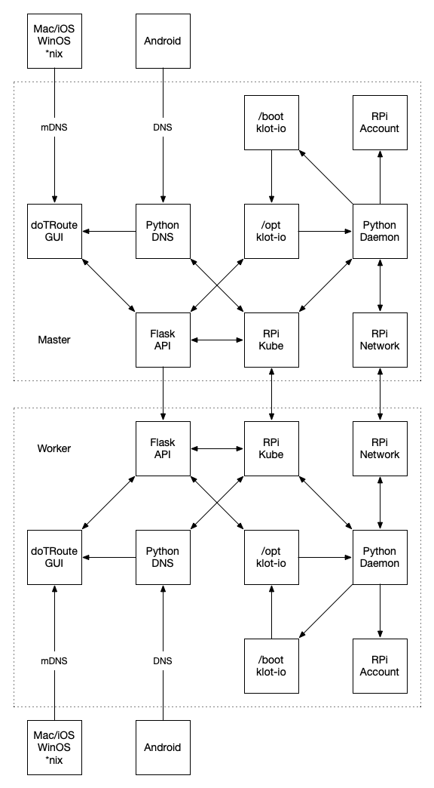

{{#def.Header}}
<div class="uk-overflow-container">
    
    <h1>How the &*%$#! Does This Thing Work?</h1>

    <h2>Design</h2>

    <h3>Components</h3>

    <p>The klot.io system (jeez, I sound like an infomerical) is composed of several pieces:</p>

    <ul>
        <li>
            Processes - what does the work
            <ul>
                <li>Python Daemon - implements configuration</li>
                <li>Flask API - indicates status and accepts changes</li>
                <li>doTRoute GUI - easy to use interface for regular folks</li>
            </ul>
        </li>
        <li>
            Services - what to configure
            <ul>
                <li>RPi Account - pi account password and SSH access</li>
                <li>RPi Network - Whether wired or wireless and how you to connect to the latter</li>
                <li>RPi Kubenetes - Whether Master or Worker, how to connect the latter to the former</li>
            </ul>
        </li>
        <li>
            Storage - where configuration is retained
            <ul>
                <li>/opt/klot-io - current state, what everything show be</li>
                <li>/boot/klot-io - initial state, able to be set by mounting the SD card</li>
            </ul>
        </li>
    </ul>

    <h3>Layout</h3>

    

    <h2>Workflows</h2>

    <p>
        These are the Workflows listed in <a href="{{=DRApp.link('install')}}">Install</a> and <a href="{{=DRApp.link('apps')}}">Apps</a>.
        They're simple for the User but a lot's going on in the background. 
    </p>

    <h3>Master</h3>

    <ol>
        <li>User burns image onto SD, inserts into Pi, and powers it up.</li>
        <li>User goes to http://klot-io.local</li>
        <li>GUI sees the URL is the default and sets future HTTP header 'klot-io-password' with 'kloudofthings'.</li>
        <li>GUI sends to home action, to determine landing page based on Node status.</li>
        <li>API reads configuration from /opt/klot-io sending it to the GUI.</li>
        <li>GUI rediects to Config http://klot-io.local/#/config since no Cluster exists.</li>
        <li>GUI hits API http://klot-io.local/api/config (OPTIONS) to get the current settings.</li>
        <li>GUI dynamically builds a form based on User selections.</li>
        <li>User submits form for configuration.</li>
        <li>GUI sends data to API http://klot-io.local/api/config (POST).</li>
        <li>API writes data to /opt/klot-io.</li>
        <li>Daemon sees that files have changed in /opt/klot-io.</li>
        <li>Daemon applies account changes to the pi account and SSH service.</li>
        <li>Daemon applies network changes to network services.</li>
        <li>Daemon inits Node as Master, setting token from the sha256 of the password.</li>
        <li>Daemon applies Flannel and Klot I/O App CRD manfiests.</li>
        <li>Daemon copies Kubernetes Admin Config to Kubernetes User Config.</li>
        <li>GUI continuoysly polls new domain (cluster)-klot-io.local, switching User once active.</li>
        <li>GUI sees the URL is not the default and fails to acquire status, sending User to Login.</li>
        <li>User logs in, GUI sends to home action, to determine landing page based on Node status.</li>
        <li>GUI sets future HTTP header 'klot-io-password' with what the User entered.</li>
        <li>GUI rediects to Status page as Kubernetes comes up.</li>
        <li>GUI hit API http://(cluster)-klot-io.local/api/status (GET), rending with that info.</li>
        <li>GUI Status continually polls API, refreshing each time.</li>
        <li>GUI Status eventually indciates the Master is Ready.</li>
    </ol>

    <h3>Worker</h3>

    <ol>
        <li>User burns image onto SD, inserts into Pi, and powers it up.</li>
        <li>User goes to http://(cluster)-klot-io.local/#/node</li>
        <li>Master GUI hits the Master API http://(cluster)-klot-io.local/api/node (GET)</li>
        <li>Master API detects klot-io.local is a valid domain, and adds to the front of the Node list</li>
        <li>Master API queries Kubernetes for Nodes, putting the Master next on the list</li>
        <li>Master API return Node list to Master GUI</li>
        <li>Master GUI lists Nodes, seeing one is Unintialized, creating a Join form.</li>
        <li>User types in a name and clicks Join.</li>
        <li>Master GUI hits the Master API http://(cluster)-klot-io.local/api/node (POST) with the Name</li>
        <li>Master API hits the Initialized API http://klot-io.local/api/config (POST) with headder password and its Config but as Worker with Name</li>
        <li>Initialized API writes data to /opt/klot-io.</li>
        <li>Initialized API Daemon sees that files have changed in /opt/klot-io.</li>
        <li>Initialized API Daemon applies account changes to the pi account and SSH service.</li>
        <li>Initialized API Daemon applies network changes to network services.</li>
        <li>Initialized API Daemon join Node to Master, using token from the sha256 of the password.</li>
        <li>Master GUI hit Master API http://(cluster)-klot-io.local/api/node (GET), rending with that info.</li>
        <li>Master GUI Status continually polls API, refreshing each time.</li>
        <li>Master GUI Status eventually indciates the Workers is Ready.</li>
    </ol>

    <h3>App</h3>

    <ol>
        <li>User goes to http://(cluster)-klot-io.local/#/app</li>
        <li>GUI hits the Master API http://(cluster)-klot-io.local/api/app (GET)</li>
        <li>API return Kubernetes Klot I/O Apps</li>
        <li>GUI lists Apps, including a Preview form.</li>
        <li>User types in a owner/project and clicks Preview.</li>
        <li>GUI hits the API http://(cluster)-klot-io.local/api/app (POST) with the GitHub info</li>
        <li>API builds URL from information and creates an App resource in Kubernetes from the URL's content.</li>
        <li>GUI hits the API http://(cluster)-klot-io.local/api/app (GET)</li>
        <li>API return Kubernetes Klot I/O Apps, returning the latest as Preview (even though it has no Status)</li>
        <li>Daemon queries Apps in Kubernetes, sees one without a Status.</li>
        <li>Daemon builds manifest URL's by combing spec.manifests with spec.source.</li>
        <li>Daemon combines all manifest URL content into resouces on App resource, ordering by Namespace first, etc.</li>
        <li>Daemon sets App Status to Ready.</li>
        <li>GUI hits the API http://(cluster)-klot-io.local/api/app (GET)</li>
        <li>API return Kubernetes Klot I/O Apps, returning the latest as Ready.</li>
        <li>GUI lists Apps, including a Preview form.</li>
        <li>User clicks to http://(cluster)-klot-io.local/#/app/redis.klot.io</li>
        <li>GUI hits the API http://(cluster)-klot-io.local/api/app/redis.klot.io (GET)</li>
        <li>API return Kubernetes the Klot I/O App</li>
        <li>GUI hits the API http://(cluster)-klot-io.local/api/label?app=redis.klot.io (GET)</li>
        <li>API determines all the Labels availabe for that App and whether they're applied.</li>
        <li>GUI renders a single App pager, including checkboxes for Labels and an Install button (since Ready)</li>
        <li>User clicks a checkbox for a Label on a Node</li>
        <li>GUI hits the API http://(cluster)-klot-io.local/api/label (POST) with app, name, value, node in the body</li>
        <li>API appplies Label to the Node as (app)/(name)=(value).</li>
        <li>GUI hits the API http://(cluster)-klot-io.local/api/label?app=redis.klot.io (GET)</li>
        <li>API determines all the Labels availabe for that App and whether they're applied.</li>
        <li>GUI renders a single App pager, including checkboxes for Labels and an Install button (since Ready)</li>
        <li>User clicks Install</li>
        <li>GUI hits the API http://(cluster)-klot-io.local/api/app/redis.klot.io (POST)</li>
        <li>API sets App.status to Install</li>
        <li>Daemon queries Apps in Kubernetes, sees one with an Install Status.</li>
        <li>Daemon creates App.resources in order in Kubernetes and sets Status to Installed.</li>
        <li>GUI hits the API http://(cluster)-klot-io.local/api/app/redis.klot.io (GET)</li>
        <li>API return Kubernetes the Klot I/O App</li>
        <li>GUI hits the API http://(cluster)-klot-io.local/api/label?app=redis.klot.io (GET)</li>
        <li>API determines all the Labels availabe for that App and whether they're applied.</li>
        <li>GUI renders a single App pager, including checkboxes for Labels and an Uninstall button (since Installed)</li>
    </ol>

    <h3>Daemon</h3>

    <p>
        This is the full Workflow for the Daemon.
    </p>

    <ol>
        <li>Checks for /boot/klot-io/reset, reseting to defaults and rebooting if found.</li>
        <li>Checks for /opt/klot-io/lib/config.py (it's library), replacing and restarting itself if found.</li>
        <li>Checks for /boot/klot-io/config/*.yaml, copying over to /opt/klot-io/config/ if found</li>
        <li>Checks for /config/klot-io/config/*.yaml for files modified since the last time it checked.</li>
        <li>Checks /config/klot-io/config/account.yaml, setting pi password and SSH enabled/disabled if modified.</li>
        <li>Checks /config/klot-io/config/network.yaml, setting eth0 / wlan0 with SSID / PSK if modified.</li>
        <li>Checks /config/klot-io/config/kubernetes.yaml, performing kubeadm init, join, reset for roles master, worker, reset.</li>
        <li>If Master and hasn't created a pykube API, does so.</li>
        <li>If pykube API, checks Apps in Kubernetes to make Ready, Install, or Uninstall.</li>
        <li>If pykube API, clean out pykube spam certs from /tmp older than one minute (don't ask because I have no idea whypykube does this).</li>
        <li>Takes a 5 second nap, dreaming of electric sheep.</li>
    </ol>

</div>
{{#def.Footer}}
